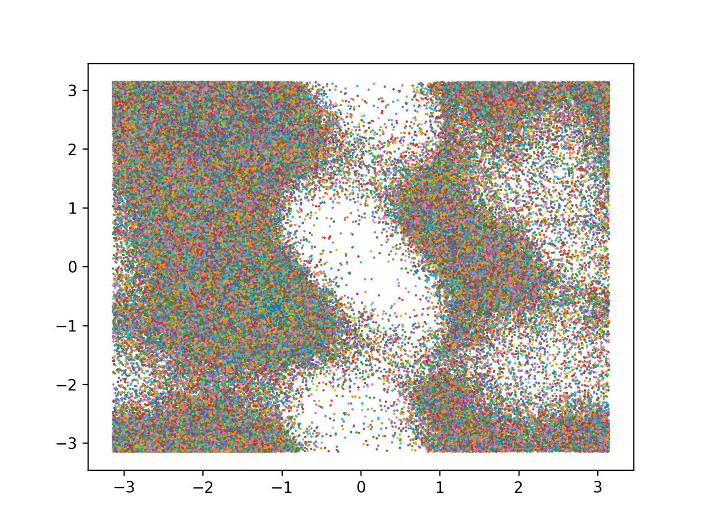

CSCI4969-6969 Assign5
Protein Structure Prediction: Distance and Angles
Due: April 28th, before midnight
In this assignment, you will add a dihedral angle prediction in addtion to the distance matrix prediction, and you also have to convert the predicted distance matrix or the dihedral angles into actual 3D coords.
Data
We will again make use of the ProteinNet Dataset. The details of the ProteinNet data are mentioned at ProteinNet Records. You can experiment with the smaller CASP7 set.
ProteinNet does not contain the true phi and psi angle pairs that we need for dihedral angle prediction. You can use the Code shown below to compute the dihedral angles. This will insert the [PHIPSI] entries into the ProteinNet files.
For converting dihedral to 3D coords, you can use the following mean bond length (in \(A^\circ\)) and bond angle (in radians) values. These were computed from the training_30 ProteinNet file:
FYI, the following plot also shows the phi (x-axis) vs. psi (y-axis) scatterplot (called the Ramachandran plot) from the 10333 protein structures in training_30.
Method
You will resue the same code from CSCI4969-6969 Assign4
The main difference is that you have to add a new output "head" to predict the phi and psi angles per position in the crop. You will use cross-entropy loss to compute the loss from the angle prediction. Use 36 bins to discretize the dihedral angles (so you get \(10^\circ\) or \(\pi/18\) radians per bin).
The final loss for training from a crop is the sum of the distance matrix loss and dihedral angle loss.
Once the joint model has been trained, apply it to the test set to compute the accuracy values for contact prediction as in assign4.
Given a test protein, you should include a command line option to generate the 3D structure. You must implement at least one of the following two methods: 1) use distance geometry to predict the 3D coords from the distance map, oe 2) use NERF method to predict the 3D coords from the dihedral angles (and the bond lengths and angles noted in Data).
For the distance geometry method, you have to compute the matrix $M$ of dot products from the distance matrix (as described in class), then compute its eigenvectors $W$ and values \(\Lambda\), and the obtain the 3D coords as \(A = (W \Lambda^{1/2})^T\)
For dihedral angle to 3D coords you can use the pNERF implementation in OpenProtein
Lastly, you your print out the 3D coords to a file in the PDB format (see Bio.PDB), and visulaize the 3D protein structure using PyMOL. Include the predicted structure file as part of your submission.
Submission
Submit assign5.py via submitty, along with an output file (txt/pdf) that summarizes the results of your method in terms of training and testing accuracy values.
Your code must not hardcode any filenames or directories, but rather accept them from the command line input. Your code will be run as:
where TRAIN is the training file (e.g., training_30), and TEST is the testing file. Here NG is an integer that denotes the nubmer of block groups to train on. Here PDBID is an optional parameter that specifies a test protein file in ProteinNet format containing only one protein. If this parameter is specified it is the protein for which you have to generate the 3D coords and the visulaize it.
You must predict and visualize the CASP13 target protein T0990 (PDB: 6N9Y). It is already in the ProteinNet format.
Please include your trained model as part of your submission. Your code should have an option to specify the trained model, so I can apply it directly on the testing file or the target protein above.
Code
Here is the code to compute phi and psi angles to extend the ProteinNet files.
Example run: compute_phi_psi.py training_30
This will generate a new file training_30_ext that includes the new header entry '[PHIPSI]' after the tertirary structure entires, followed by two new lines. The first line has all the \(\phi_i\) angles and the second line has all the \(\psi_i\) angles, for $i=1,2, ..., n$. All angles are in radians and range between \([-\pi, \pi]\), with a value of $10$ denoting invalid angle (means it was not possible to compute it for that position due to missing coordinates in the PDB file). You should not predict these invalid angles, and they can be excluded from the loss too.
Note that you will need to install Biopython to run the code.
mlib/compute_phi_psi.py (Source)